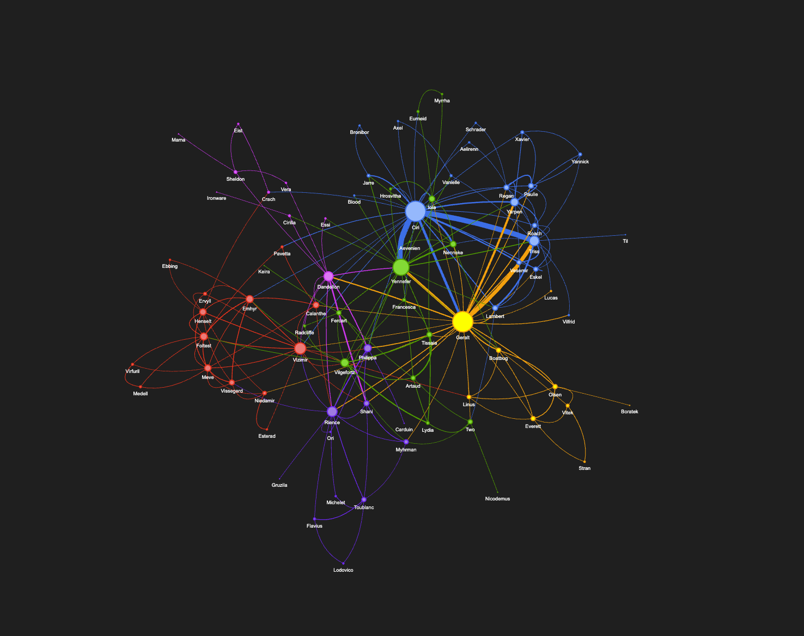

The Witcher Network

Introduction
The Witcher, Andrzej Sapkowski's epic fantasy series, has gained immense popularity and has been a major influence on the gaming and entertainment industries. The series has been adapted into video games and a Netflix original series, captivating audiences with its intricate storyline and memorable characters. In this research, we will provide an in-depth exploration of the world of The Witcher 2, highlighting its crucial characters and communities, for those who have yet to experience the latest season of the show.
Objectives:
The main objectives of this research are to identify and analyze the most significant characters in The Witcher 2 series and to gain a better understanding of the various communities that exist within its richly detailed universe. In this project, we will discuss two questions:
- What are the most important characters?
- What are the main communities in the Witcher 2 series?
Planning:
- Use Selenium, a web scraping tool, to extract character names from The Witcher Wiki.
- Process the data by converting the books into sentences and using Named Entity Recognition (NER) to identify and classify characters' named entities.
- Define a "box" of sentences in which the characters' names are mentioned between these sentences. If this condition is met, we can infer that the characters mentioned in these sentences have a relationship with each other.
- Use Pyvis, a Python library for visualizing networks, to plot the relationships between characters and communities. This will allow us to gain a better understanding of the complex web of relationships that exists within The Witcher series.